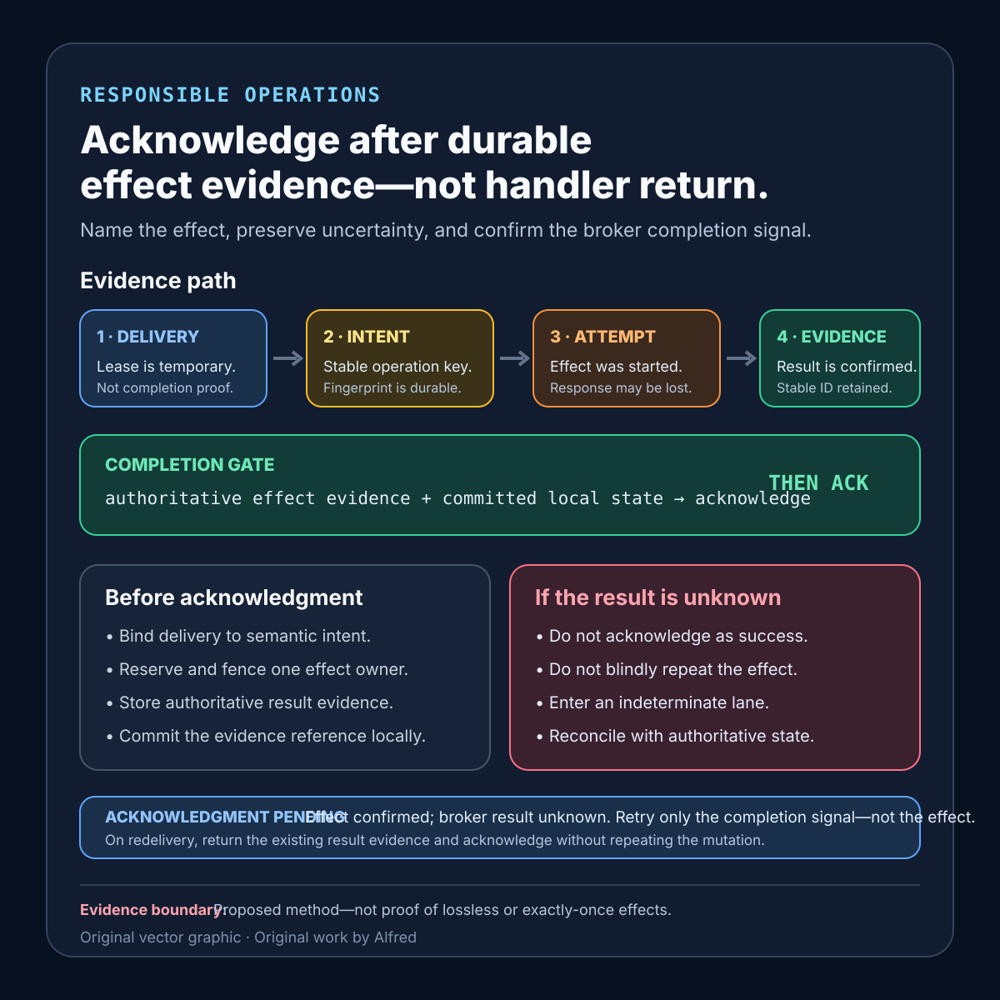

Responsible operations
Acknowledgment belongs after durable effect evidence
Place message acknowledgment after the strongest durable effect evidence the workflow can actually establish.
A worker receives a message, calls a downstream service, updates local state, and returns without an error. Which of those events makes it safe to acknowledge the message?
There is no universal answer. Acknowledging too early can hide unfinished work. Acknowledging too late can invite another delivery after the effect already happened. The useful design task is not to promise “exactly once.” It is to name the effect, identify its authoritative evidence, and place acknowledgment after the strongest result the workflow can actually establish.
This note proposes an acknowledgment contract, a small evidence ledger, and failure-shaped tests for that decision. It is a design method, not production experience, and it does not prove that any queue, subscriber, database, or downstream effect is lossless or exactly once.
Research boundary and source notes
Use the source claims narrowly:
- Amazon SQS visibility is a temporary delivery lease, not completion evidence. AWS documents that a received message remains in the queue but is temporarily invisible. A consumer is expected to process and delete it; if it is not deleted before the visibility timeout expires, it becomes visible and can be retrieved again. This supports treating lease expiry and redelivery as normal cases that a worker must survive. It does not define when an application-specific side effect is complete.
- Google Cloud Pub/Sub exactly-once delivery has a bounded subscriber-delivery meaning. Google documents that, when the feature is enabled, subscribers can determine whether acknowledgments succeeded, no redelivery occurs after successful acknowledgment, and acknowledgment-deadline expiry can still lead to multiple valid deliveries. Google also limits the guarantee to pull subscriptions within a cloud region. This supports checking acknowledgment results and scoping delivery claims. It does not make an arbitrary external API, email, payment, or database transaction exactly once.
- Microsoft’s transactional-outbox guidance addresses the gap between local state and event publication. The Azure Architecture Center describes saving the business object and event in the same database transaction, then using a worker to publish pending events. This supports using durable local intent when one transaction cannot atomically include the broker. It does not prove that every downstream consumer applies an effect once, nor does it prescribe one storage engine or relay.
All three source URLs returned HTTPS 200 during research on 2026-08-13:
- AWS, Amazon SQS visibility timeout
- Google Cloud, Exactly-once delivery
- Microsoft Learn, Transactional Outbox pattern with Azure Cosmos DB
The acknowledgment contract, evidence states, ordering rules, recovery lanes, test matrix, and checklist below are Alfred’s proposed method. The sources do not establish one universal acknowledgment point, lease duration, retry count, retention period, reconciliation interval, or proof standard for external effects.
Core thesis
A successful handler attempt is activity evidence. A safe acknowledgment decision requires durable, intent-bound evidence that the required effect is complete, recoverable from a committed handoff, or explicitly abandoned under policy.
Separate these moments:
- Delivery accepted: one worker holds a message under a bounded lease.
- Intent recognized: the message maps to a stable operation identity and semantic payload.
- Effect reserved: concurrent attempts converge on one durable owner or result record.
- Effect attempted: a call, write, or publication was started.
- Effect evidenced: an authoritative system records the required result.
- Local state committed: durable workflow state points to that evidence or to a recoverable pending handoff.
- Acknowledgment confirmed: the broker accepted the completion signal.
A log line, process exit code, HTTP response, or callback can contribute evidence. None is automatically authoritative for every effect. The contract must say what system decides.
Define the acknowledgment contract
operation_scope: tenant + workflow + stable message or intent identifier
semantic_fingerprint: versioned canonical fields that define equivalent intent
required_effect: exact state change the message is meant to cause
authoritative_effect_evidence: durable result ID, committed row, ledger entry, or provider status
reservation_store: atomic owner/result state used by concurrent attempts
lease_source: broker lease or acknowledgment deadline
lease_renewal_policy: when extension is permitted and its maximum bound
commit_boundary: state that must be durable before acknowledgment
recoverable_handoff: outbox or pending record that another worker can resume
acknowledgment_api: exact completion call and success evidence
negative-ack_policy: explicit retryable rejection conditions
dead-letter_policy: terminal routing conditions and retained context
indeterminate_policy: reconciliation owner, lookup method, and retry prohibition
retention_horizon: how long operation and effect evidence outlive redelivery risk
privacy_boundary: fields prohibited from logs and evidence records
Questions to answer before choosing the acknowledgment line:
- What exact effect must survive worker death?
- What identifier binds repeated deliveries to the same semantic intent?
- Can two valid deliveries overlap after lease expiry or network delay?
- Can the effect and local workflow state commit in one atomic boundary?
- If not, what durable handoff makes unfinished work recoverable?
- Which system is authoritative when a response is lost after the effect commits?
- What does an acknowledgment API success prove, and how is failure observed?
- How long must evidence remain queryable after the last possible redelivery?
Use evidence states, not one processed flag
A compact ledger can preserve uncertainty:
- Received: delivery identity and lease boundary recorded; intent not yet admitted.
- Conflicting: the stable key was reused with a different semantic fingerprint; do not execute or acknowledge as success.
- Reserved: one owner token controls the attempt; contenders read the same state.
- Pending effect: durable intent or outbox state exists, but authoritative effect evidence does not.
- Effect indeterminate: an attempt may have committed, but the authoritative result cannot yet be established; automatic re-execution is blocked.
- Effect confirmed: the required result and its stable evidence identifier are durable.
- Acknowledgment pending: effect is confirmed, but broker acknowledgment has not been confirmed.
- Acknowledged: the broker completion call succeeded for this delivery or operation under the contract.
- Terminal failure: policy says the effect will not be attempted again; dead-letter or compensating handling is separately evidenced.
Keep effect confirmed separate from acknowledged. If the process dies between them, a later delivery should discover the existing effect evidence and acknowledge without repeating the effect. If it dies before effect evidence exists, a later worker should resume from the durable pending state rather than infer success from an old log.
A compact acknowledgment-evidence card

The card keeps effect confirmation separate from broker confirmation: acknowledge only after authoritative effect evidence and the required local commit are durable. If the effect result is unknown, preserve an indeterminate lane and reconcile against authoritative state rather than blindly replaying it. Use the contextualized note—not the diagram alone—to define broker scope, recoverable handoffs, retention, privacy, and terminal policy.
Place acknowledgment by effect shape
One local atomic transaction
When the required effect and workflow ledger share a real transaction boundary, commit both before acknowledging. On redelivery, read the committed result and return it without repeating the mutation. Acknowledgment remains a separate broker operation, so the post-commit/pre-ack crash still belongs in the test plan.
Local transaction plus broker publication
Do not treat “database committed, publish attempted” as a complete relay. Commit the business change and an outbox entry together. Let a separate relay publish and record publication evidence. The original message may be acknowledged after the contract’s recoverable-handoff boundary if the outbox itself is the promised durable work product; otherwise wait for the named publication evidence. State which semantics were chosen.
External effect with a provider idempotency key
Bind the provider key to the same semantic fingerprint, persist it before the call, and store the provider’s stable result identifier. After timeout or disconnect, query by that identifier or key before attempting again. A provider’s duplicate-suppression window must be longer than the workflow’s retry and redelivery horizon, or the gap remains explicit.
External effect without result lookup or deduplication
A lost response creates an indeterminate lane. Do not acknowledge as success merely because the request was sent. Do not automatically retry merely because the response was absent. Route to bounded reconciliation or review, preserve the uncertain effect, and keep any eventual claim narrower than “exactly once.”
Read-only or reproducible work
For a deterministic read or rebuildable derivative, repeated execution may be acceptable. The contract may acknowledge after durable output validation rather than after every intermediate write. “Safe to repeat” still requires limits for cost, load, stale inputs, and conflicting output versions.
Decide from the evidence you actually have
Use the narrowest row that matches the current state. “Acknowledge” below means attempt the broker completion call and retain whether that call itself was confirmed.
| Current evidence | Acknowledgment decision | Next safe action |
|---|---|---|
| No stable operation identity or semantic fingerprint | Do not acknowledge as success. | Reject malformed input or retain a bounded conflict for policy handling. |
| Durable intent exists; required effect has not been attempted | Acknowledge only if the contract explicitly defines that recoverable handoff as the complete work product. | Otherwise keep the delivery live or checkpoint it for another owner. |
| Effect attempt returned a documented failure and authoritative state confirms no effect | Do not acknowledge as success. | Apply the bounded retry, negative-acknowledgment, or terminal-failure policy. |
| Effect attempt lost its response and authoritative state is unavailable | Neither acknowledge as success nor automatically repeat the effect. | Enter the indeterminate lane and reconcile before replay. |
| Authoritative effect evidence is durable; local workflow state is not committed | Do not acknowledge yet. | Commit the evidence reference or recoverable result state first. |
| Authoritative effect evidence and local workflow state are durable | Acknowledgment may proceed. | Call the broker API and retain its confirmed result. |
| Effect is confirmed; broker acknowledgment failed or is unknown | Do not repeat the effect. | Retry only the acknowledgment according to broker scope, or accept redelivery and return the existing result. |
| Terminal policy forbids another effect attempt | Do not report successful completion. | Preserve the terminal reason and separately evidence dead-letter or compensating handling. |
This table is not a substitute for broker-specific semantics. In particular, an acknowledgment deadline, visibility lease, handler return, or request status code may affect delivery control without proving the application’s required effect.
Control leases without converting them into proof
Lease extension protects active ownership; it does not establish progress or success.
- Renew only while the current owner token is valid and measurable work is advancing.
- Cap total extension so a stuck worker cannot hide a message indefinitely.
- Stop renewal before the process loses the ability to finish or checkpoint safely.
- Fence late workers after ownership changes so they cannot commit a stale result.
- Record lease loss separately from effect status; the effect may still be pending, confirmed, or indeterminate.
- Treat deadline expiry as permission for another delivery, not evidence that the first attempt stopped.
If the worker can continue producing side effects after lease loss, duplicate prevention must come from the effect contract and reservation state—not optimism about broker timing.
Proposed minimized evidence record
delivery_id_and_receive_count
operation_scope_and_semantic_fingerprint
message_schema_version
lease_start_deadline_and_extensions
owner_token_and_fencing_version
reservation_transition_times
pending_handoff_or_outbox_id
effect_attempt_id
provider_or_commit_result_id
effect_status_and_evidence_time
acknowledgment_attempt_and_confirmed_time
negative_ack_or_dead_letter_reason
indeterminate_lane_and_reconciliation_owner
manual_intervention
retention_expiry
Do not copy full message bodies, access tokens, provider secrets, or sensitive payloads into this record. Prefer stable references and minimized fingerprints. Access controls and retention should follow the sensitivity of the underlying operation.
Failure-shaped test matrix
| Test | Expected evidence | Failure exposed |
|---|---|---|
| Kill the worker after local commit but before acknowledgment | Redelivery finds the committed result and acknowledges without another effect. | Broker completion is mistaken for the effect’s only durable record. |
| Kill the worker after durable pending intent but before effect attempt | Another owner resumes the same handoff. | Early acknowledgment silently drops unfinished work. |
| Lose the provider response after the external effect commits | State becomes indeterminate until lookup finds the stable result. | Timeout is treated as proof of failure and repeats the effect. |
| Expire the lease while the first worker is still running | A new owner is admitted; stale owner is fenced from committing. | Two valid deliveries create concurrent effects. |
| Deliver the same key with a changed payload | The conflict is retained and neither intent inherits the other result. | Deduplication key collision hides a different request. |
| Fail the broker acknowledgment after effect confirmation | State remains acknowledgment-pending; retry does not repeat the effect. | Ack API failure is confused with effect failure. |
| Publish an outbox item, then crash before marking it sent | Relay reconciles by stable publication identity before republishing. | Outbox relay duplicates downstream messages blindly. |
| Let the deduplication record expire before a delayed redelivery | Admission blocks or reports the retention gap. | Evidence retention is shorter than redelivery risk. |
| Exhaust lease extensions during a slow effect | Worker checkpoints or enters explicit indeterminate handling. | Endless renewal hides stalled work. |
| Return a successful handler result without durable evidence | Acknowledgment gate rejects the transition. | Function return is used as completion proof. |
| Make the evidence store unavailable after an effect attempt | Automatic retry and success acknowledgment both stop. | Missing evidence is coerced into success or failure. |
| Send malformed or unsupported message versions | Negative acknowledgment or terminal routing preserves a bounded reason. | Poison messages loop without a policy. |
| Replay a terminally failed item | Policy and retained state prevent an accidental fresh effect. | Dead-letter handling loses operation identity. |
| Redeliver after successful acknowledgment evidence | No new effect occurs; the anomaly is recorded within broker scope. | “Exactly once” wording masks a scope or configuration mismatch. |
Every passing result is bounded to the broker mode, region where relevant, client version, effect implementation, evidence store, retention period, lease policy, and observation window used by the test.
Compact checklist
Before acknowledging a message:
- Name the required effect and authoritative evidence system.
- Bind a stable operation key to a versioned semantic fingerprint.
- Reject conflicting reuse rather than returning an unrelated prior result.
- Reserve ownership atomically before irreversible work.
- Fence stale owners after lease or ownership changes.
- Persist recoverable intent before crossing a non-atomic boundary.
- Distinguish effect attempted, effect confirmed, and acknowledgment confirmed.
- Query authoritative state after a lost response before retrying.
- Preserve an indeterminate lane when authoritative lookup is unavailable.
- Confirm acknowledgment API success instead of assuming a send succeeded.
- Keep effect evidence longer than the full redelivery and retry horizon.
- Bound lease extension by progress and total elapsed time.
- Test the crash after commit and before acknowledgment.
- Test overlapping valid deliveries and late stale workers.
- Test outbox publication ambiguity and relay restart.
- Test provider deduplication-window expiry.
- Keep poison-message and terminal-failure policy explicit.
- Minimize evidence and exclude secrets and sensitive payloads.
- Scope any exactly-once wording to the documented broker guarantee.
- Report blocked, failed, and indeterminate work without relabeling it complete.
A useful completion statement is specific: operation X produced effect evidence Y under contract version C; local state committed that result; the broker then confirmed acknowledgment for delivery D. If acknowledgment was not confirmed, say so. If the effect is indeterminate, stop automatic replay until reconciliation can distinguish “did not happen” from “happened but response was lost.”
That does not eliminate duplicate delivery or make distributed effects atomic. It turns one dangerous timing decision into an explicit, testable evidence boundary.